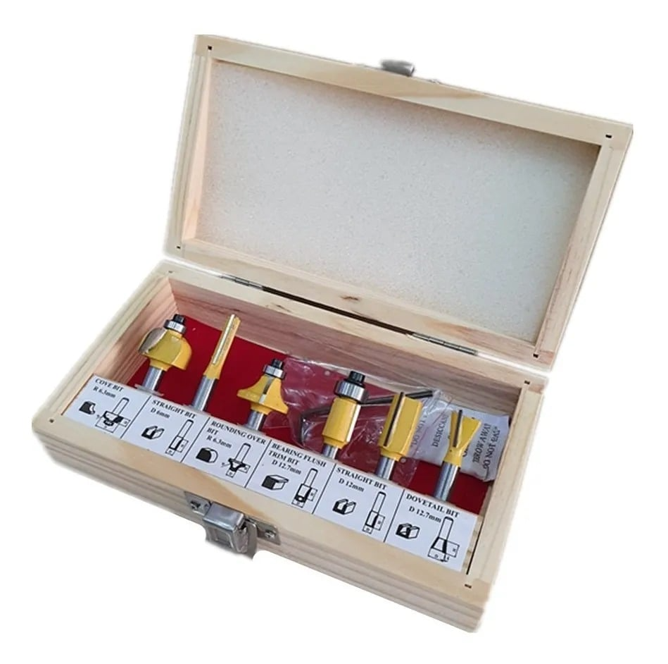
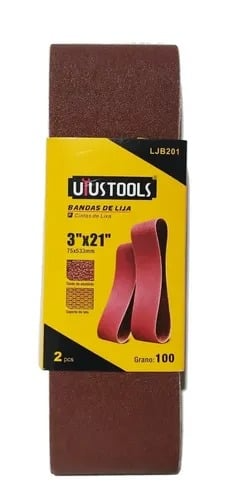

Llave Carraca para andamios con chicharra 19 y 22 mm. para montaje y desmontaje de andamios.

Carraca Andamio
Set 6 destornilladores de impacto. Con puntas paleta y phillips.

Set Destornilladores Impacto
Disco de Lijado 4 1/2 pulgadas con velcro y adaptador para taladro. Incluye 5 lijas de distinto grano.
Disco de Lijas
Set de fresas para madera, con filos de Carburo de Tungsteno (Widia), con toma de 1/4 de pulgada o 6,35 mm.
Set Fresas Router
Juego de 8 Gubias con hojas más populares ideal para torno de madera o tallado de madera. Hojas de acero de carbono. Mangos de madera pulida. Longitud total de cincel: 36cm aprox..
Set Gubias Torno
Bandas de Lija para operaciones de desbaste, calibrado y terminación en superficies como madera, metal, fibra y otros. Tamaño 75 mms x 533 mms.
Set Lijas de Banda
Juego de 14 llaves punta corona; fabricadas de acero cromo vanadio; uso para taller mecanico o domestico. Llaves de medidas: 6, 7, 8, 9, 10, 11, 12, 13, 14, 17, 19, 21, 22, 24mm..
Set Llaves Punta Corona
Piola o cable de acero 8mm rollo de 100 mt; alma de fibra para mayor flexibilidad. Resiste aproximadamente 3.5 ton.